Essences de Boss
Essences de Boss
Essence cristallisée de Narmer
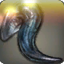1
Moustache électrique
Une essence crée à partir de matériaux de Narmer grâce à
l'ancienne magie de Voarmur.
Effet sur arme
Confère l'aptitude
Flash au porteur.
Flash : En tant qu'action, votre arme se mets à
briller puis émet un puissant éclat lumineux. Toutes les créatures
hostiles
dans un rayon de 3 mètres autour de vous doivent effectuer un jet
de
sauvegarde de Sagesse de DD 14. De nuit, le rayon d'effet est de
4.5
mètres et le DD du jet de sauvegarde passe à 16. En cas d'échec du
jet, elles sont aveuglées
pendant 3 rounds. En cas de réussite à la sauvegarde, la créature
n'est pas aveuglée. Flash est utilisable 2 fois par repos long.
Effet sur armure
Les dégâts
perforants et de glace reçus sont diminués de 4. Les dégâts de feu
et de foudre reçus sont augmentés de 2.
Essences de F.O.E.
Essence cristallisée de Cerfurieux
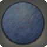2
Peau de cerf
Une essence crée à partir de matériaux de Cerfurieux grâce à
l'ancienne magie de Voarmur.
Effet sur arme
Confère l'aptitude
Assaut perturbant au porteur.
Assaut perturbant : En tant qu'action, attaquez
une
créature avec
votre arme. En cas de touche, cette créature doit effectuer un jet
de sauvegarde d'Intelligence de DD 17. En cas d'échec du jet, elle
est confuse
pendant 3 rounds. En cas de réussite à la sauvegarde, la créature
n'est pas confuse. Assaut perturbant est utilisable 2 fois par
repos
long.
Effet sur armure
Les dégâts de
foudre
reçus sont diminués de 2. Les dégâts de feu reçus sont augmentés
de
1.
Essence cristallisée de Lézard goinfre
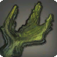2
Crête de lézard
Une essence crée à partir de matériaux de Lézard goinfre grâce à
l'ancienne magie de Voarmur.
Effet sur arme
Confère l'aptitude
Assaut corrosif au porteur.
Assaut corrosif : En tant qu'action, attaquez
une
créature avec votre arme. En cas de touche, cette créature doit
effectuer un jet de sauvegarde de Constitution de DD 17. En cas
d'échec du jet, elle est empoisonnée
pendant 3 rounds, subissant 1d6 + 3 de dégâts de poison à chaque
tour où elle continue d'être empoisonnée. En cas de réussite à la
sauvegarde, la créature n'est pas empoisonnée. Assaut corrosif est
utilisable 2 fois par repos long.
Effet sur armure
Les dégâts de feu
reçus sont diminués de 2. Les dégâts de glace reçus sont augmentés
de 1.
Essence cristallisée de Tyran déchaîné
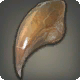2
Dent d'hippopotame
Une essence crée à partir de matériaux de Tyran déchaîné grâce à
l'ancienne magie de Voarmur.
Effet sur arme
Confère l'aptitude
Charge furieuse au porteur.
Charge furieuse : En tant qu'action complexe,
vous
chargez en ligne droite, jusqu'à votre vitesse de déplacement
restante. Si vous vous déplacez d'au moins 3 mètres de cette
façon,
et que vous entrez en collision avec une autre créature, vous
pouvez
effectuer une attaque contre celle-ci en situation d'avantage. En
cas de touche, la créature est repoussée de jusqu'à 3 mètres de
vous. Charge furieuse est utilisable 2 fois par repos long.
Effet sur armure
Les dégâts
contondants reçus sont diminués de 2. Les dégâts de feu reçus sont
augmentés de 1.
Essences de monstres
Essence cristallisée d'Arum titan
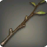3
Lierre piquant
Une essence créée à partir de matériaux d'Arum titan grâce à
l'ancienne magie de Voarmur.
Effet sur arme
Confère l'aptitude
Assaut aveuglant au porteur.
Assaut aveuglant : En tant qu'action, attaquez
une
créature avec
votre arme. En cas de touche, cette créature doit effectuer un jet
de sauvegarde de Constitution de DD 16. En cas d'échec du jet,
elle
est aveuglée
pendant 3 rounds. En cas de réussite à la sauvegarde, la créature
n'est pas aveuglée. Assaut aveuglant est utilisable 2 fois par
repos
long.
Effet sur armure
Les dégâts de
foudre
reçus sont diminués de 2. Les dégâts tranchants reçus sont
augmentés
de 2.
Essence cristallisée de Champitoxi
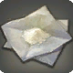3
Hyphe toxique
Une essence crée à partir de matériaux de Champitoxi grâce à
l'ancienne magie de Voarmur.
Effet sur arme
Confère l'aptitude
Assaut affaiblissant au porteur.
Assaut affaiblissant : En tant qu'action,
attaquez
une créature avec votre arme. En cas de touche, cette créature
doit
effectuer un jet de sauvegarde de Constitution de DD 16. En cas
d'échec du jet, elle subit un malus de -2 sur ses jets de
sauvegarde
pendant 3 rounds. En cas de réussite à la sauvegarde, elle ne
subit
pas de malus. Assaut affaiblissant est utilisable 2 fois par repos
long.
Effet sur armure
Les dégâts de
foudre
reçus sont diminués de 2. Les dégâts de feu reçus sont augmentés
de
2.
Essence cristallisée de Corbec
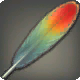3
Plume verte
Une essence crée à partir de matériaux de Corbec grâce à
l'ancienne magie de Voarmur.
Effet sur arme
Change le type de
dégâts de l'arme en contondant.
Effet sur armure
Les dégâts de feu
reçus sont diminués de 2. Les dégâts perforants reçus sont
augmentés
de 2.
Essence cristallisée de Crabe scylla
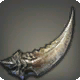3
Pince ensanglantée
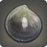3
Carapace d'acier
Une essence crée à partir de matériaux de Crabe scylla grâce à
l'ancienne magie de Voarmur.
Effet sur arme
Confère un bonus de
1d6 aux dégâts infligés contre les cibles incapables de se
déplacer.
Effet sur armure
Les dégâts
perforants reçus sont diminués de 2. Les dégâts contondants reçus
sont augmentés de 2.
Essence cristallisée de Dendrobate
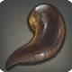3
Langue élastique
Une essence crée à partir de matériaux de Dendrobate grâce à
l'ancienne magie de Voarmur.
Effet sur arme
Confère l'aptitude
Assaut bondissant au porteur.
Assaut bondissant : En tant qu'action bonus,
ciblez une créature à portée de mêlée et effectuez un test
d'Acrobaties de DD 14. En cas de réussite du jet, vous
bondissez au dessus de la créature ciblée et retombez derrière
elle, sans déclencher d'attaques d'opportunité. En cas d'échec à
la sauvegarde, vous ne vous déplacez pas. Assaut bondissant est
utilisable 2 fois par repos long.
Effet sur armure
Les dégâts de
foudre reçus sont diminués de 2. Les dégâts de glace reçus sont
augmentés de 2.
Essence cristallisée de Diablotin d'eau
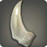3
Dent robuste
Une essence crée à partir de matériaux de Diablotin d'eau grâce à
l'ancienne magie de Voarmur.
Effet sur arme
Change le type de
dégâts de l'arme en tranchant.
Effet sur armure
Les dégâts de feu
reçus sont diminués de 2. Les dégâts contondants reçus sont
augmentés de 2.
Essence cristallisée de Durian létal
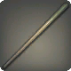3
Épine verte
Une essence crée à partir de matériaux de Durian létal grâce à
l'ancienne magie de Voarmur.
Effet sur arme
Confère l'aptitude
Assaut fétide au porteur.
Assaut fétide : En tant qu'action, attaquez une
créature avec votre arme. En cas de touche, cette créature doit
effectuer un jet de sauvegarde de Constitution de DD 16. En cas
d'échec du jet, elle est empoisonnée
pendant 3 rounds, subissant 1d4 + 2 de dégâts de poison à chaque
tour où elle continue d'être empoisonnée. En cas de réussite à la
sauvegarde, la créature n'est pas empoisonnée. Assaut fétide est
utilisable 2 fois par repos long.
Effet sur armure
Les dégâts
contondants reçus sont diminués de 2. Les dégâts de glace reçus
sont
augmentés de 2.
Essence cristallisée de Gigaconda
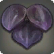3
Écaille violette
Une essence crée à partir de matériaux de Gigaconda grâce à
l'ancienne magie de Voarmur.
Effet sur arme
Confère l'aptitude
Assaut constricteur au porteur.
Assaut constricteur : En tant qu'action,
attaquez
une créature avec votre arme. En cas de touche, cette créature
doit
effectuer un jet de sauvegarde de Force de DD 16. En cas d'échec
du
jet, elle est liée aux bras pendant 3 rounds. En cas de réussite à
la sauvegarde, la
créature n'est pas liée aux bras. Assaut constricteur est
utilisable
2 fois par repos long.
Effet sur armure
Les dégâts
tranchants reçus sont diminués de 2. Les dégâts de glace reçus
sont
augmentés de 2.
Essence cristallisée de Gigapède
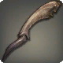3
Patte de Gigapède
Une essence crée à partir de matériaux de Gigapède grâce à
l'ancienne magie de Voarmur.
Effet sur arme
Confère l'aptitude
Assaut immobilisant au porteur.
Assaut immobilisant : En tant qu'action,
attaquez
une créature avec votre arme. En cas de touche, cette créature
doit
effectuer un jet de sauvegarde de Dextérité de DD 16. En cas
d'échec
du jet, elle est liée aux jambes pendant 3 rounds. En cas de
réussite à la sauvegarde, la
créature n'est pas liée aux jambes. Assaut immobilisant est
utilisable 2 fois par repos long.
Effet sur armure
Les dégâts
tranchants reçus sont diminués de 2. Les dégâts de foudre reçus
sont
augmentés de 2.
Essence cristallisée de Grand lynx
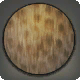3
Peau de Grand lynx
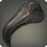3
Griffe des montagnes
Une essence crée à partir de matériaux de Grand lynx grâce à
l'ancienne magie de Voarmur.
Effet sur arme
Confère un bonus de
1d3
aux dégâts contre les cibles prises en tenaille.
Effet sur armure
Les dégâts de
foudre
reçus sont diminués de 2. Les dégâts de feu reçus sont augmentés
de
2.
Essence cristallisée de Granthorynque
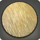3
Queue empoisonnée
Une essence crée à partir de matériaux de Granthorynque grâce à
l'ancienne magie de Voarmur.
Effet sur arme
Confère l'aptitude
Tacle au porteur.
Tacle : En tant qu'action, attaquez une créature
à
portée de mêlée. En cas de touche, cette créature doit effectuer
un
jet de sauvegarde de Constitution de DD 16. En cas d'échec du jet,
la créature est repoussée de 1,5 mètres en arrière et vous avancez
vers l'emplacement qu'elle occupait. Ce déplacement est
obligatoire
si la créature a été repoussée. Si la créature ne peut pas reculer
à
cause d'un obstacle, elle reste sur place mais subit 1d10 de
dégâts
contondants supplémentaire. En cas de réussite à la sauvegarde, la
créature n'est pas repoussée. Tacle est utilisable 2 fois par
repos
long.
Effet sur armure
Les dégâts de
glace
reçus sont diminués de 2. Les dégâts de feu reçus sont augmentés
de
2.
Essence cristallisée de Limace astrale
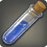3
Détecteur puissant
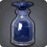3
Sang de Limace astrale
Une essence crée à partir de matériaux de Limace astrale grâce à
l'ancienne magie de Voarmur.
Effet sur arme
Change le type de
dégâts de l'arme en glace.
Effet sur armure
Les dégâts de
glace
reçus sont diminués de 2. Les dégâts de foudre reçus sont
augmentés
de 2.
Essence cristallisée de Pincette
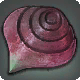3
Petite carapace
Une essence crée à partir de matériaux de Pincette grâce à
l'ancienne magie de Voarmur.
Effet sur arme
Confère l'aptitude
Assaut paralysant au porteur.
Assaut paralysant : En tant qu'action, attaquez
une créature avec votre arme. En cas de touche, cette créature
doit
effectuer un jet de sauvegarde de Constitution de DD 16. En cas
d'échec du jet, elle est paralysée
pendant 3 rounds. En cas de réussite à la sauvegarde, la créature
n'est pas paralysée. Assaut paralysant est utilisable 2 fois par
repos long.
Effet sur armure
Les dégâts de feu
reçus sont diminués de 2. Les dégâts de glace reçus sont augmentés
de 2.
Essence cristallisée de Piravageur
3
Dent acérée
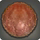3
Écaille rouge
Une essence crée à partir de matériaux de Piravageur grâce à
l'ancienne magie de Voarmur.
Effet sur arme
Change le type de
dégâts de l'arme en perforant.
Effet sur armure
Les dégâts de
glace
reçus sont diminués de 2. Les dégâts contondants reçus sont
augmentés de 2.
Essence cristallisée de Rainette
3
Jambe gluante
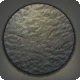3
Joue de grenouille
Une essence crée à partir de matériaux de Rainette grâce à
l'ancienne magie de Voarmur.
Effet sur arme
Confère un bonus de
+1
à la précision et aux dégâts des attaques d'opportunité.
Effet sur armure
Les dégâts de
foudre
reçus sont diminués de 2. Les dégâts de glace reçus sont augmentés
de 2.